★★★★★
„Pane Petře, moc děkujeme za perfektní zateplení našeho domu. Práce byla odvedena přesně jak bylo domluveno a výsledek předčil naše očekávání. Dům vypadá skvěle a energie šetříme znatelně víc."
Profesionální zateplování rodinných domů, fasádní omítky a sádrokartonářské práce na Jižní Moravě. Spolehlivá práce, férová cena, dohodnutý termín.
Co nabízím
Od zateplení fasády až po interiérové dokončovací práce – vše profesionálně a na klíč.
Kompletní zateplovací systémy ETICS pro rodinné i bytové domy. Nižší náklady na vytápění a lepší komfort bydlení.
Finální povrchové úpravy fasád – škrábaná, hlazená nebo strukturální omítka dle přání zákazníka.
Příčky, podhledy, šachtování a veškeré interiérové sádrokartonářské konstrukce – přesně a čistě.
Fajnové vnitřní omítky a štuky pro dokonalý výsledek. Rovné stěny a hladký povrch připravený na malování.
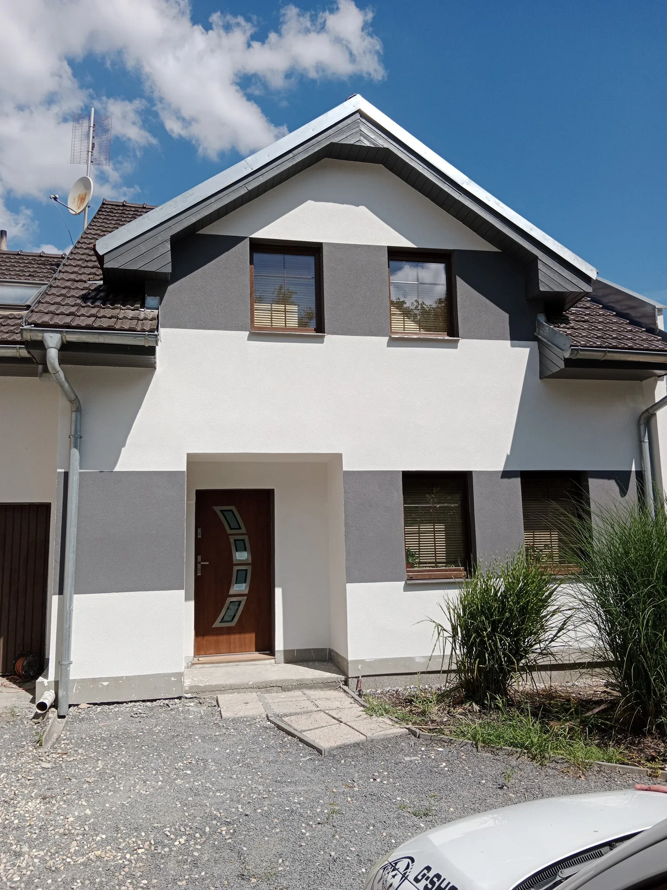
O mně
Jsem živnostník s více než 15 lety zkušeností v oboru stavebnictví. Specializuji se na zateplování rodinných domů, fasádní omítky a sádrokartonářské práce na Jižní Moravě.
Každou zakázku beru jako svoji vlastní. Záleží mi na kvalitě provedení, dodržení termínů a spokojenosti zákazníka. Pracuji pečlivě, přesně a s respektem k vašemu majetku.
Reference a hodnocení zákazníků si můžete prohlédnout také na portálu NejŘemeslníci.cz.
Proměny
Podívejte se, jak dokážeme proměnit váš dům k nepoznání.
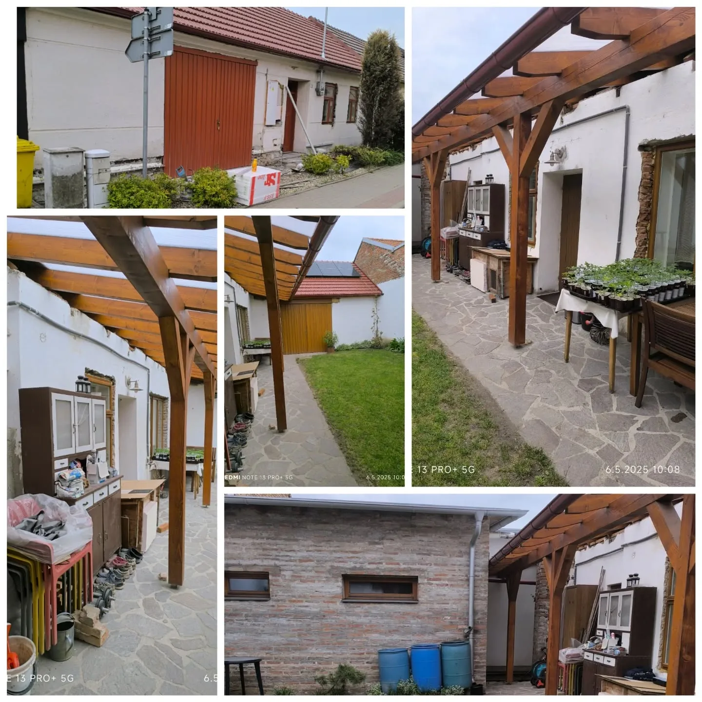
Před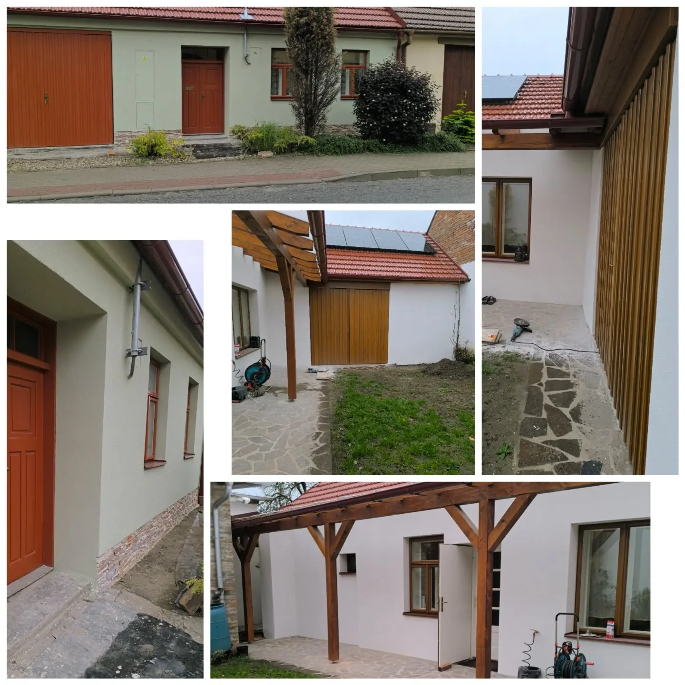
PoKompletní zateplení a nová fasáda rodinného domu
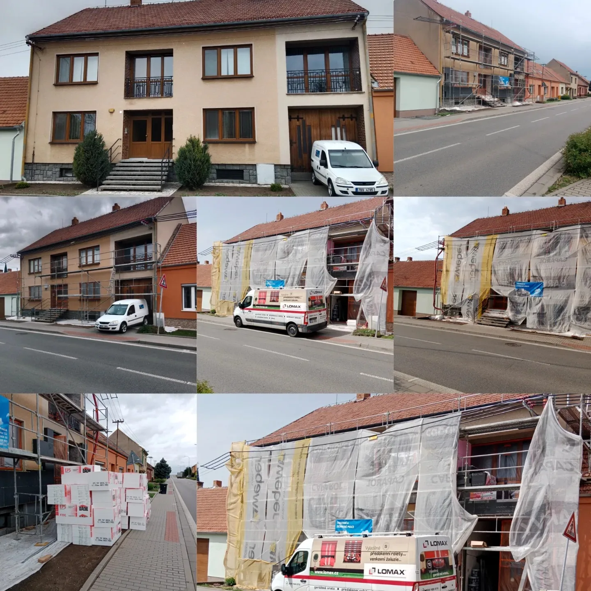
Před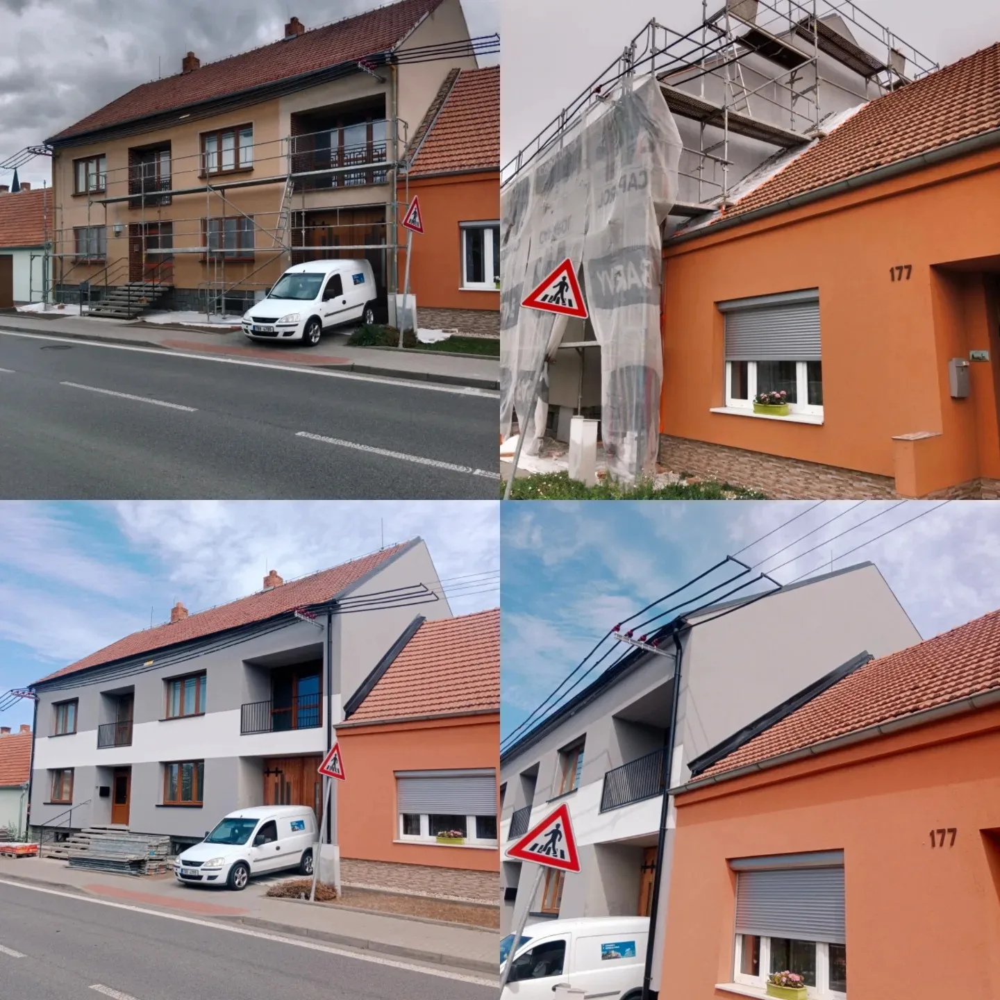
PoZateplení a nová fasáda bytového domu – dramatická proměna
Galerie
Ukázky dokončených projektů. Rodinné domy, bytové domy i novostavby na Jižní Moravě.
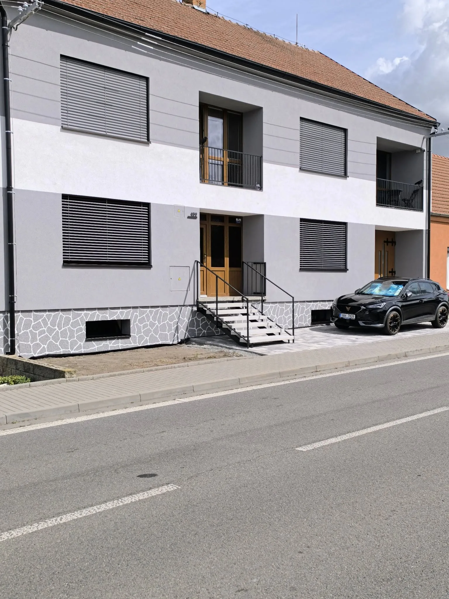
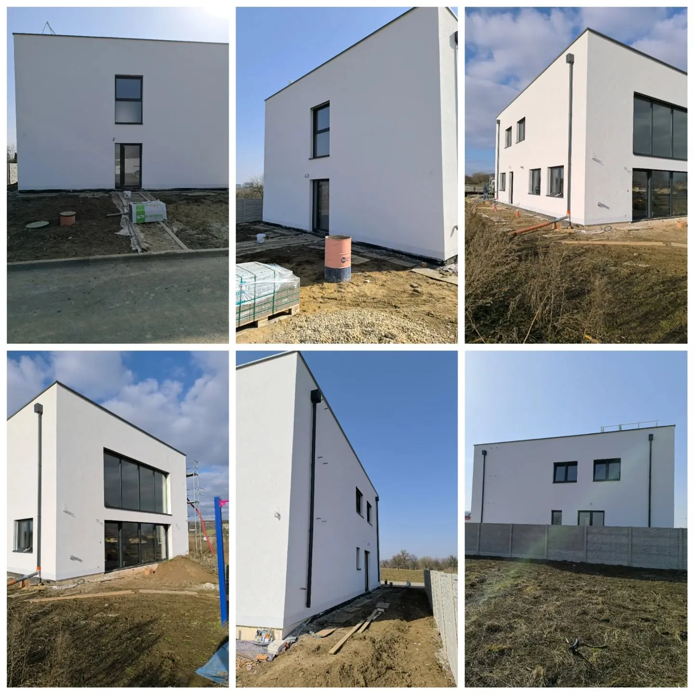
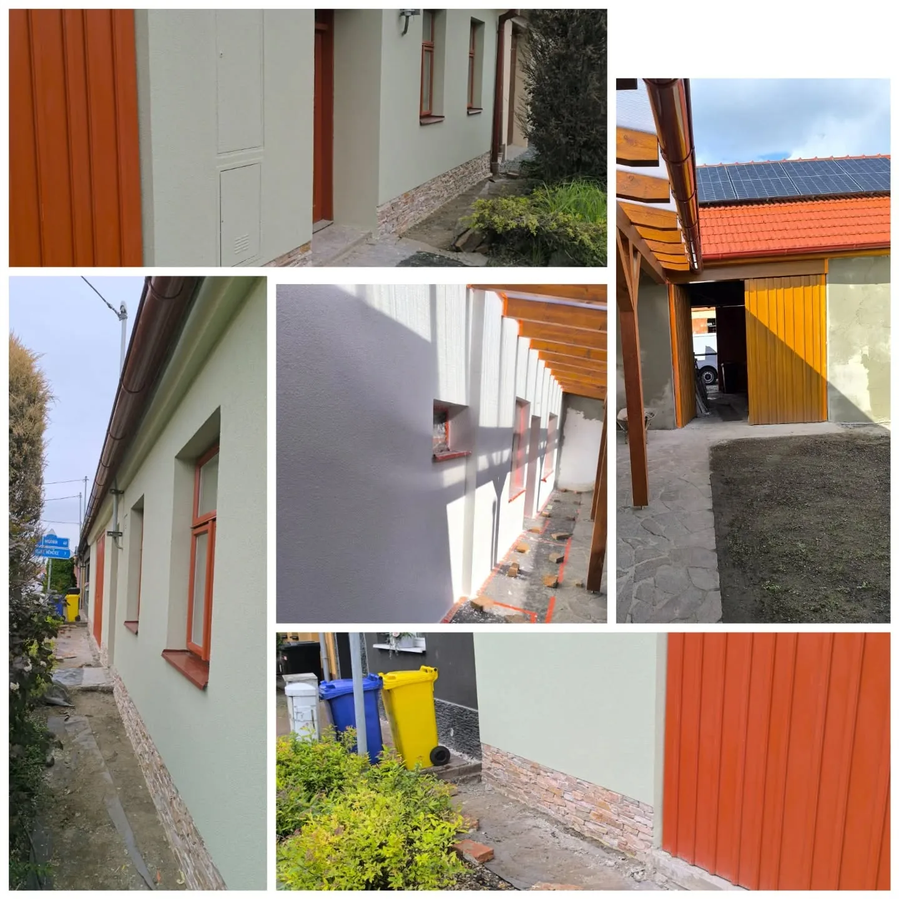
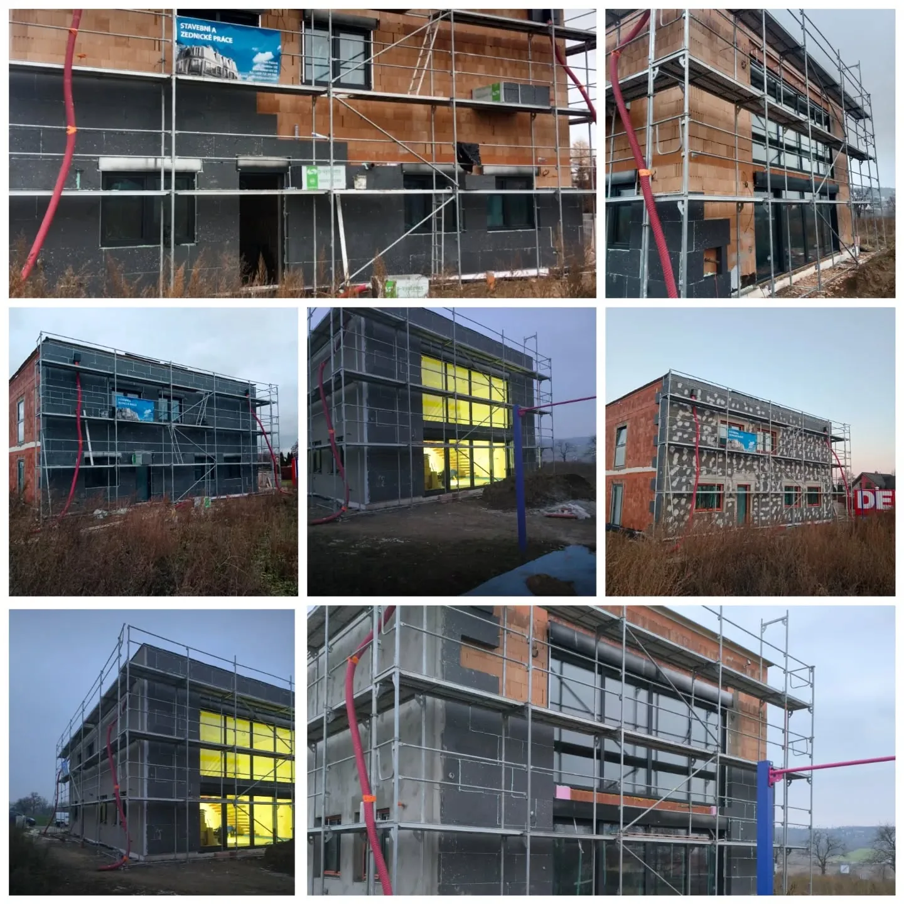
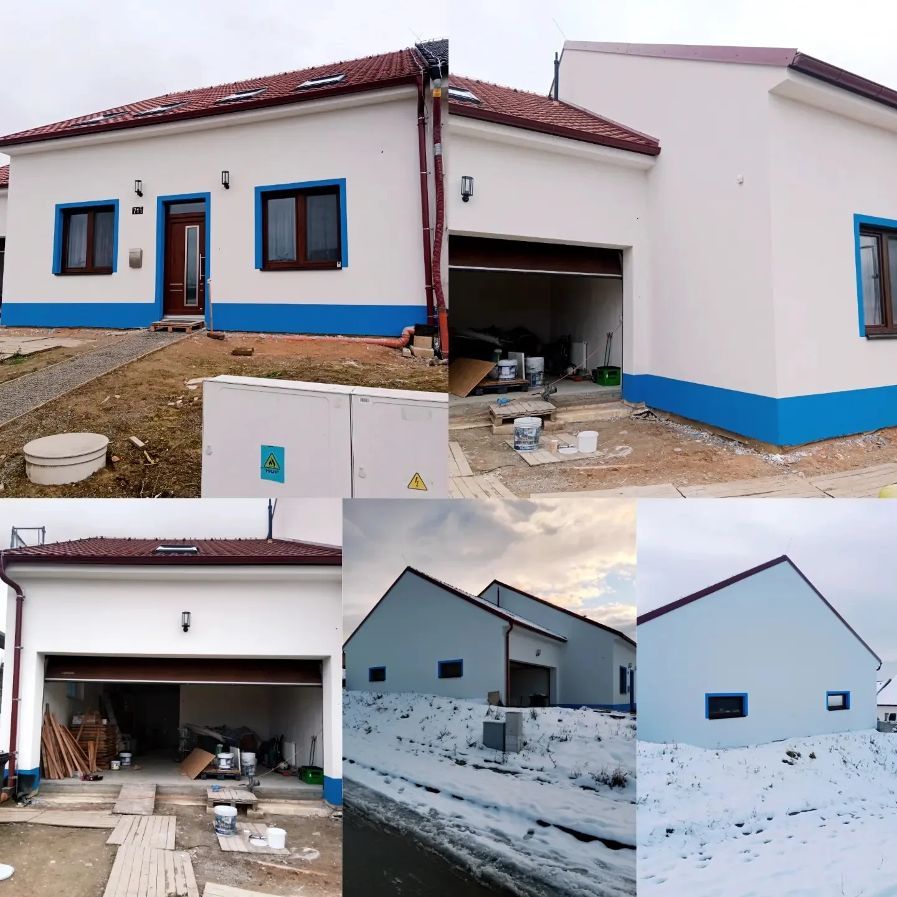
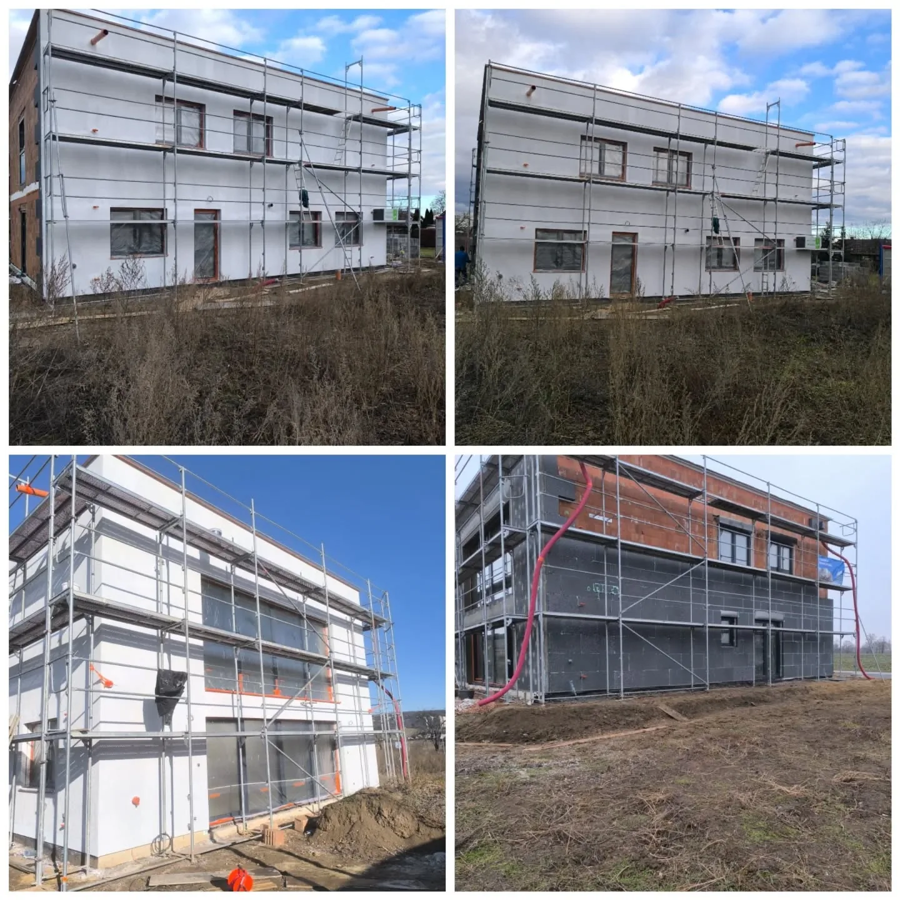
Recenze
Spokojenost zákazníků je pro mě na prvním místě.
„Pane Petře, moc děkujeme za perfektní zateplení našeho domu. Práce byla odvedena přesně jak bylo domluveno a výsledek předčil naše očekávání. Dům vypadá skvěle a energie šetříme znatelně víc."
„Skvělá práce, přesné termíny, nádherné výsledky. Nic není problém, vždy poradí a navrhne nejlepší řešení. Fasáda je dokonalá – sousedé se ptají, kdo nám to dělal. Jednoznačně doporučuji!"
„Sádrokartonářské práce v celém bytě – příčky i podhledy. Vše dokonalé, přesné, čisté a rychlé. Pan Poláček je skutečný profesionál, pracuje pečlivě a bez zbytečného nepořádku. Jsme nadšeni."
„Zateplení a fasáda na naší řadovce – výsledek je úžasný. Pan Poláček pracuje svědomitě, dochvilně a za rozumnou cenu. Celý dům vypadá jako nový. Určitě ho doporučím všem známým!"
Kontakt
Ozvěte se pro nezávaznou konzultaci nebo nacenění. Rád poradím a domluvím termín prohlídky zdarma.
Telefon
728 509 805
polacek85@gmail.com
@petan.poly_stavby
Messenger / Facebook
Poly stavby
Zavolejte nebo napište – rádi se domluvíme na termínu prohlídky a bezplatném nacenění vaší zakázky.
📞 Zavolejte nyní ✉️ Napište e-mail